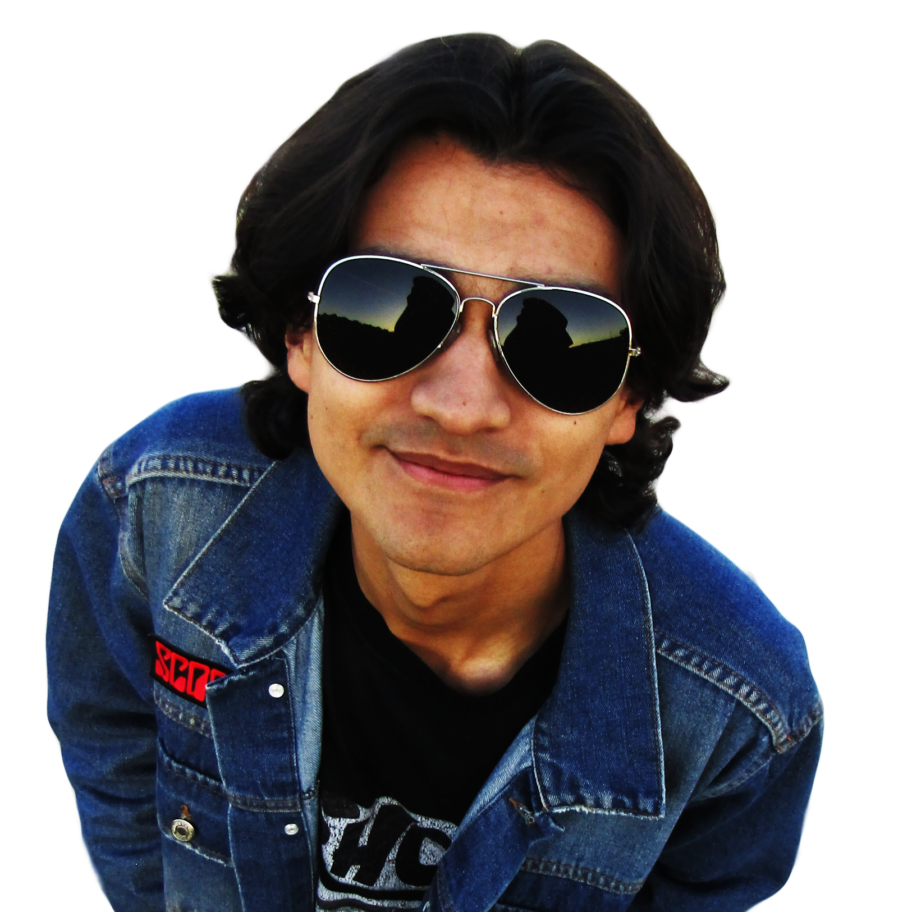
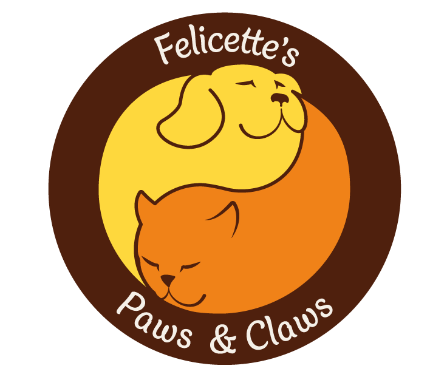
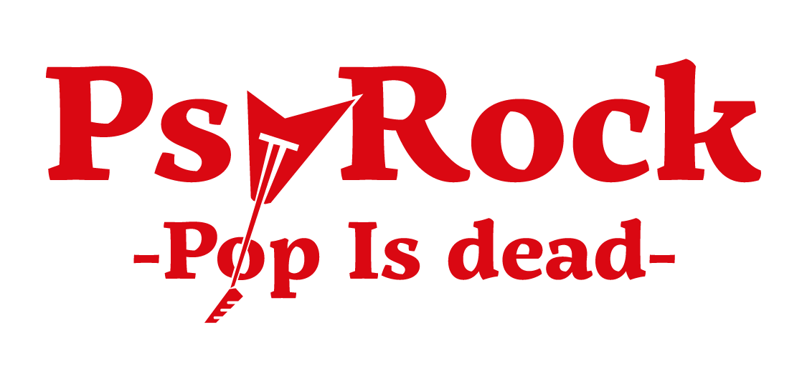
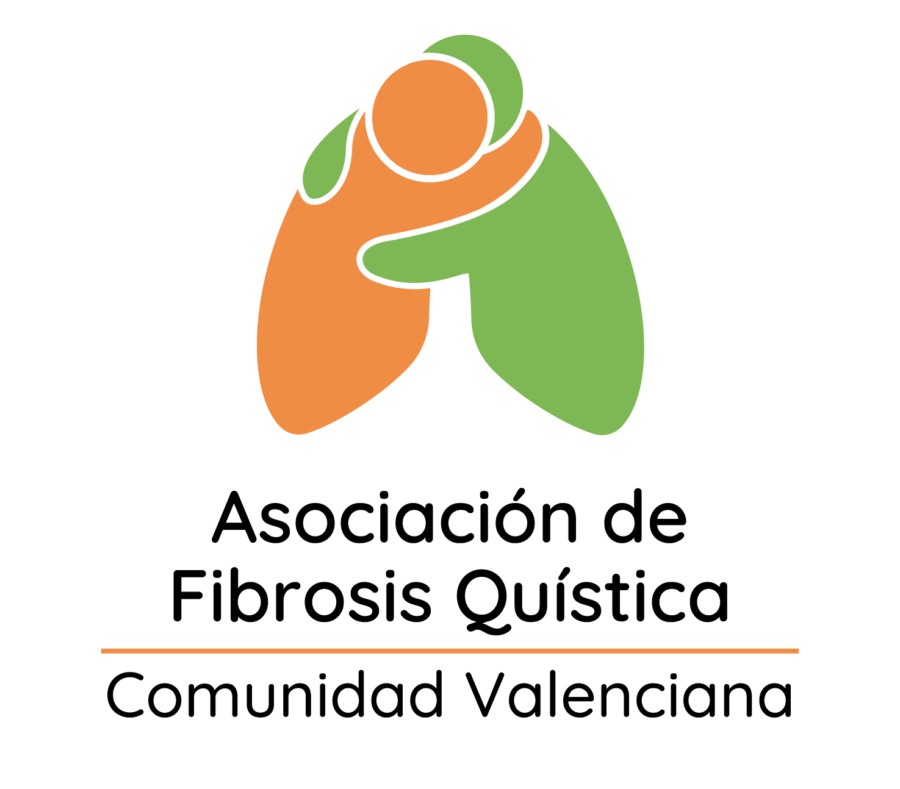
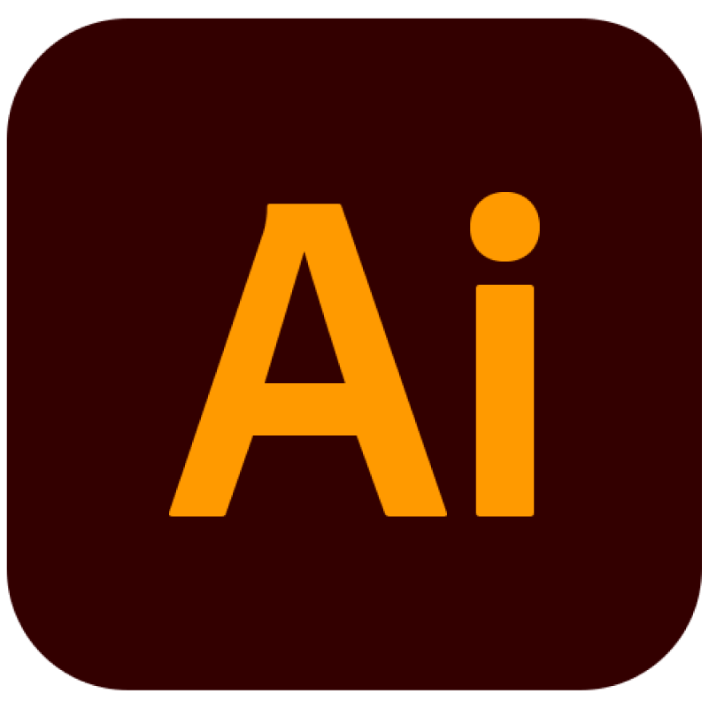
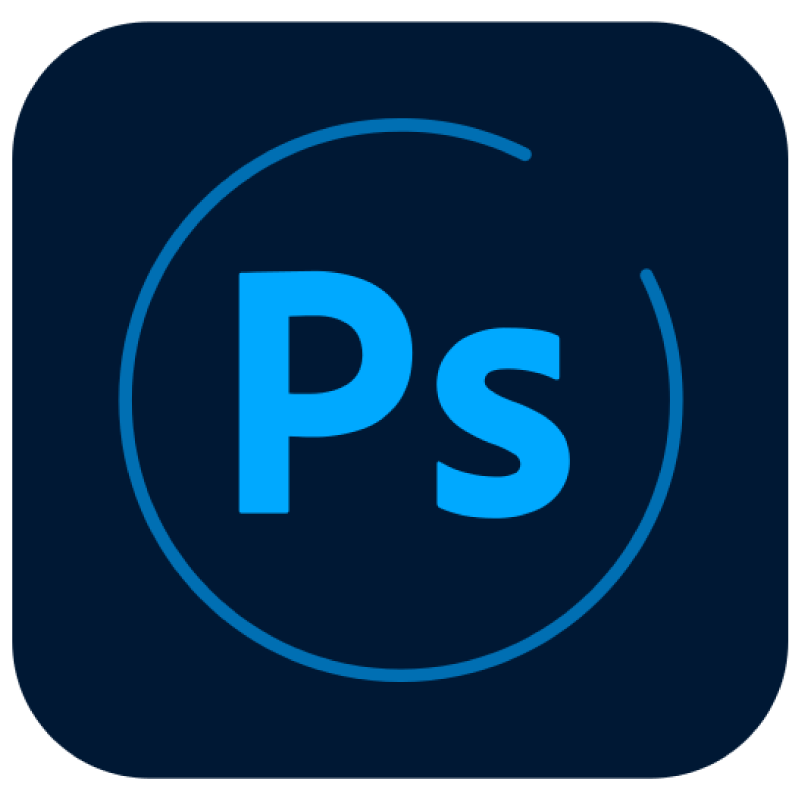
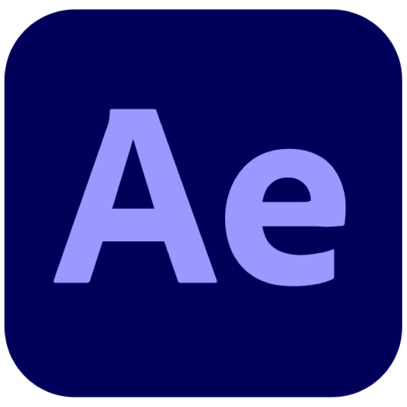
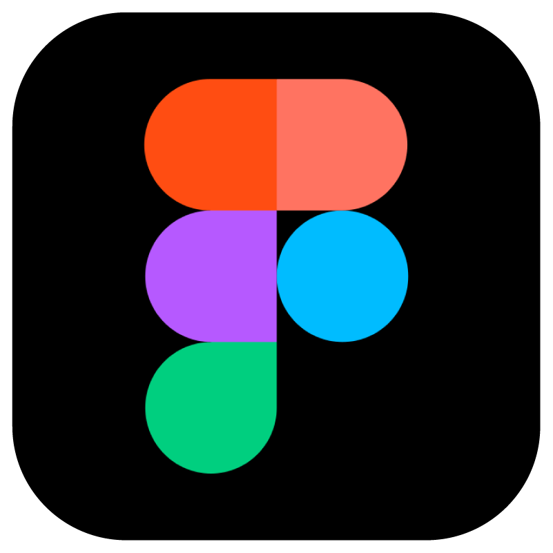
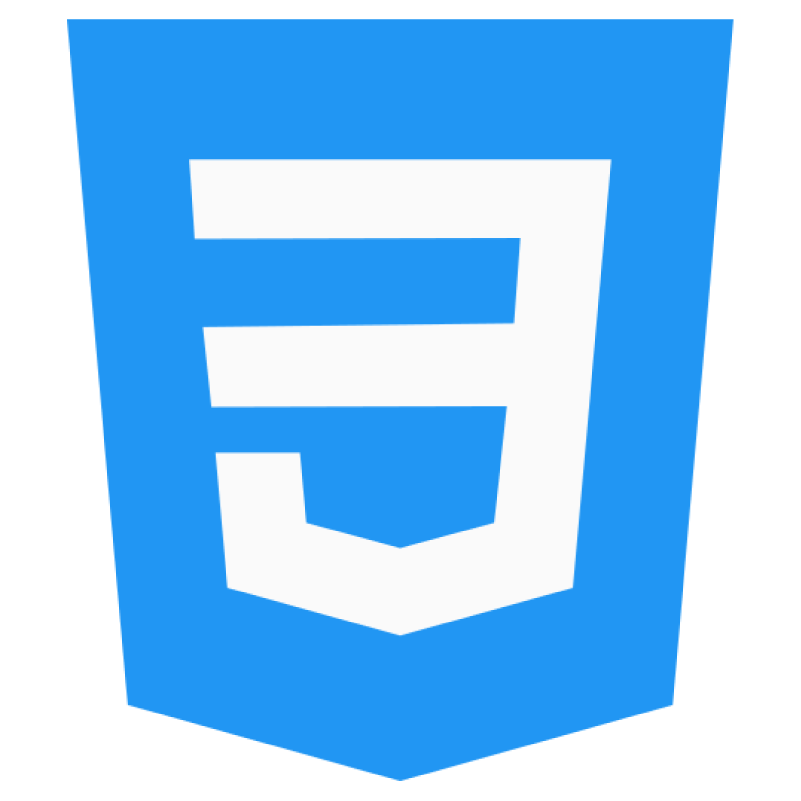

Juan Esteban Cárdenas
Diseño Gráfico & Web

Feliccete's
Paws & Claws
UX-UI / Identidad Visual

PsyRock
Editorial / Identidad visual

Asociación
Fibrosis Quística
Identidad Visual
SOFTWARE

Illustrator

Photoshop
InDesign

After Effects
WordPress

Figma
HTML

CSS